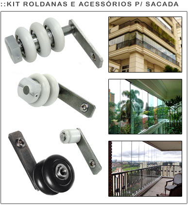

A BAYER ACESSÓRIOS é uma empresa direcionada para a fabricação e comercialização de Roldanas, Acessórios p/ Box, Engenharia, Envidraçamento de Sacadas, Puxadores, entre outros.
Estamos no ramo há 15 anos
...
mais...